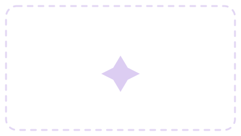
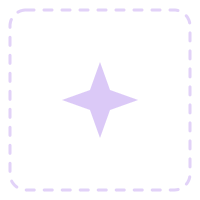
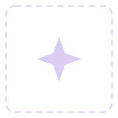

24-HOUR DESIGNATHON • UX CLUB, UT DALLAS • OCT 25–26, 2025
DreamScape
A speculative app for visualizing and reflecting on dreams, designed around the prompt: what might people use in the future?

- Role
- UX & Interaction Designer
- Format
- 24-hour designathon
- Timeline
- Oct 25–26, 2025
- Tools
- Figma, Spline
Overview
Problem
Dreams fade quickly after waking, leaving only fragments of emotion or imagery — and existing sleep-tracking apps focus on metrics like duration or heart rate, overlooking the emotional and visual depth of dreaming.
Goal
Visualize and document users' dreams for self-reflection and mental wellness — converting REM sleep data into visual, textual, and interactive formats, with a glassmorphism-inspired interface and an AI companion named Snoozy.
Impact
This was a 24-hour designathon concept, not a shipped product, so there's no real usage data yet. [TBD: add outcomes if this gets built or tested.]
Research
Research shows that visualizing and reflecting on dreams can offer real mental health benefits when privacy and safety are prioritized. Clinicians and care teams can use patient-generated visualizations to encourage self-reflection, motivate behavior change, and inform treatment — and both patients and clinicians point to the value of a digital intermediary, or "digital navigator," to help interpret these visualizations accurately (Chang et al., 2023, MDPI).
Privacy is a central concern, especially for users with lived experience of mental illness. People are generally willing to share personal health data to improve care and support research, but only when there are real safeguards against misuse, discrimination, or unintended exposure — which points to granular control over shared data, easy revocation, and privacy-first design as best practices (Diva Portal; Medium).
Dream content can be shaped by pre-sleep media exposure, which affects recall, vividness, and emotional tone — for higher-fidelity REM recordings, minimizing external visual stimuli before sleep is recommended (PMC). Trauma sensitivity matters too: visualizing dream content can be distressing, so trauma-informed design — filtering, blurring, and opt-in access for potentially distressing content — helps protect psychological safety without losing the reflective or therapeutic benefit (NCBI).
Design implications
- Exportable visualizations for clinicians, with digital-navigator support
- Privacy-by-default, with two-factor and biometric protections
- Trauma-informed safety through filtered, flagged, or blurred content and in-app grounding supports
- High-quality REM capture through a controlled pre-sleep environment
- Early engagement with policymakers to help establish ethical standards for sensitive neurotechnology
These findings directly shaped DreamScape's design — aiming for something clinically useful, privacy-conscious, trauma-informed, and ethically responsible.

Process
Privacy vs. clinical value
Resolved with privacy-by-default settings, two-factor/biometric login, and opt-in exports for a "digital navigator" to review.

Immersion vs. emotional safety
Resolved with trauma-informed filtering, blurring, opt-in access to flagged content, and in-app grounding supports.
Design Iterations
Built in Figma (a glassmorphic system: soft blurs, gradients, and layered transparency) and Spline (the 3D elements, including Snoozy, the AI companion who guides users through their dream recordings) — swap the placeholders below for real sketches/screens as they're exported.
Final Solution
See the work in full — the interactive prototype, the pitch deck, and the research board it grew from.
Dream visualization
Converts REM sleep data into visual, textual, and interactive formats.
Content filtering
Screens potentially distressing content before it's shown to the user.
Snoozy, the AI companion
Guides users through reviewing and reflecting on their dream recordings.
Results
This was a 24-hour designathon concept rather than a shipped product, so there's no real usage data to report yet — these are the metrics we'd want to track if it were built and tested.
Reflection
- Balancing speculative design with realism was crucial for keeping the concept engaging rather than far-fetched
- Explored UI motion and glassmorphism — transparent, layered surfaces that helped the interface feel dreamlike
- Learned how much storytelling does to ground an experimental idea, making it feel emotionally resonant and user-centered